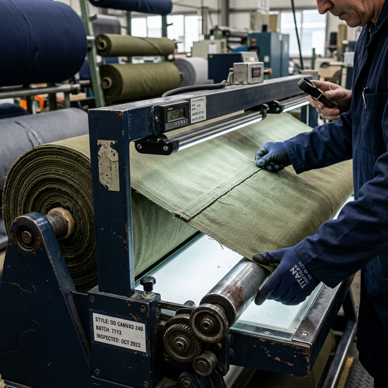
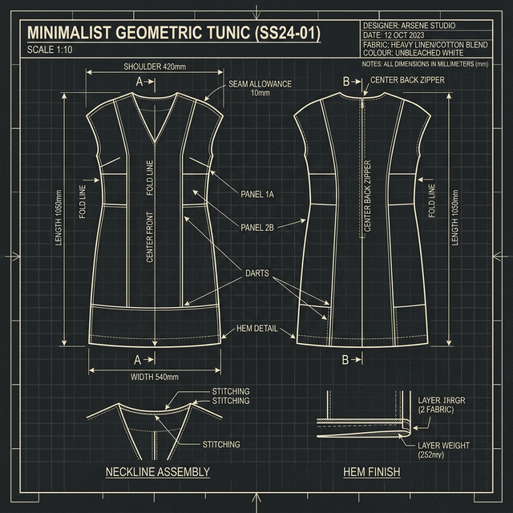

Khi linh kiện may mặc lỗi, sản xuất chậm lại... và chi phí tăng nhanh. Cẩm nang này bóc tách những sai lầm phổ biến trong kỹ thuật và nguồn cung mà chúng tôi quan sát được tại các vận hành OEM — và cách tránh chúng.


(Vui lòng điền thông tin để nhận tài liệu thực chiến dành riêng cho Giám đốc Thu mua)
Trong hơn 15 năm qua, DTT đã giúp các thương hiệu may mặc, đơn vị đồng phục và bảo hộ lao động giải quyết các thách thức phức tạp trong thiết kế và sản xuất linh kiện ngành may.
Chúng tôi hiểu rõ rủi ro nằm ở đâu — và chúng tôi biết cách ngăn chặn chúng.
Cẩm nang này được thiết kế để giúp đội ngũ kỹ thuật và vận hành của bạn làm việc hiệu quả hơn, giảm thiểu ma sát và xây dựng các thành phẩm may mặc chất lượng cao hơn.